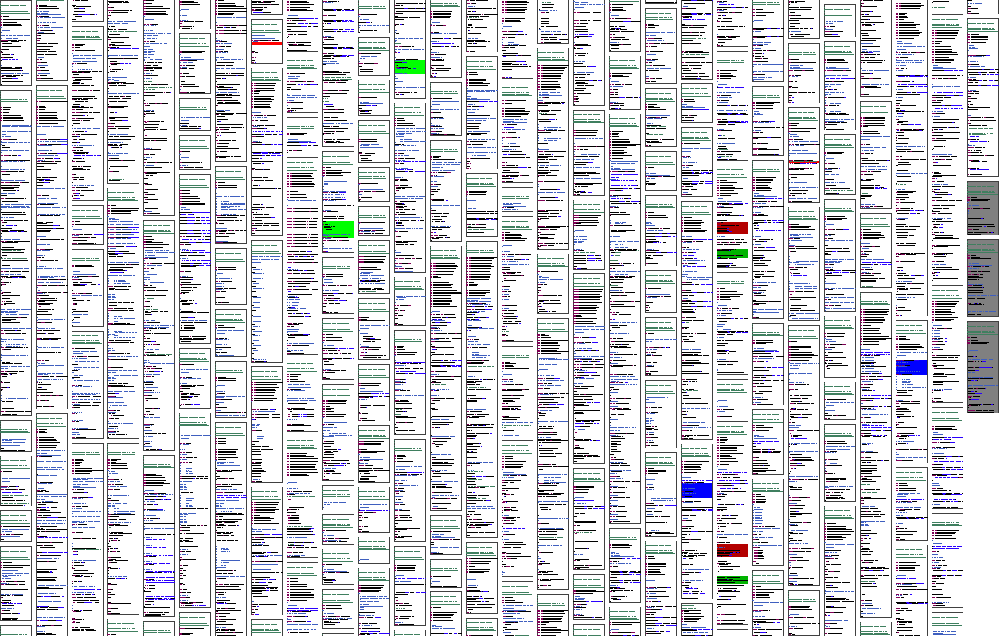

Processors and accompanying classes for visualizing source code in SeeSoft-like views. Individual files are rendered as rectangles with each character represented by one pixel, optionally leaving out characters from the source file. The rectangles can also use a color attached to the IConQATNode and findings can be highlighted.
Here is an example output image:
